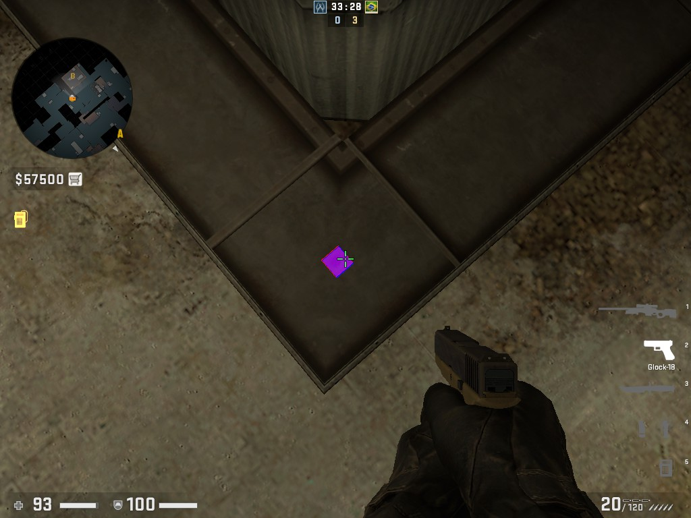
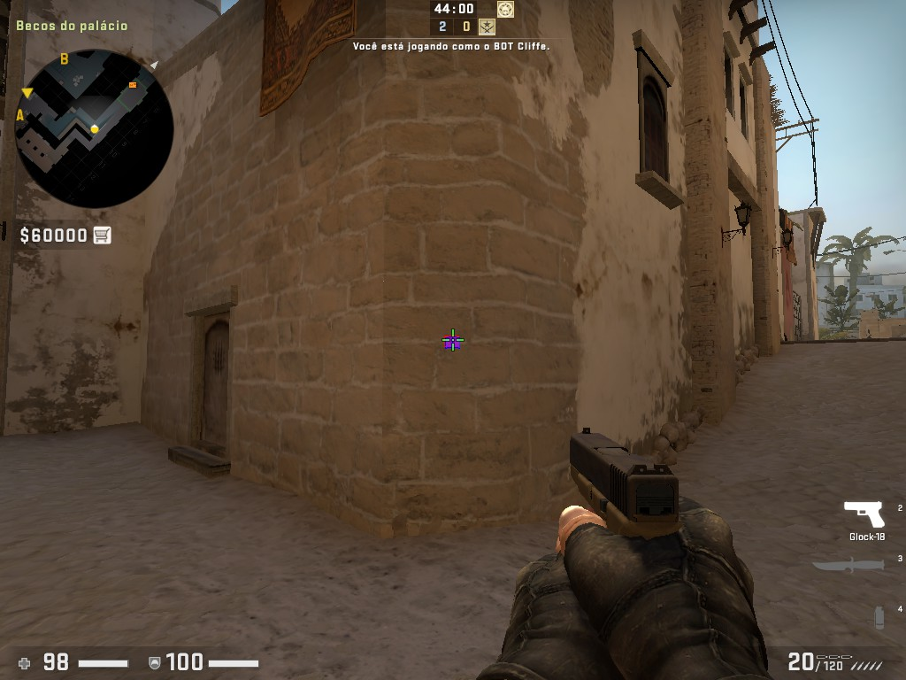
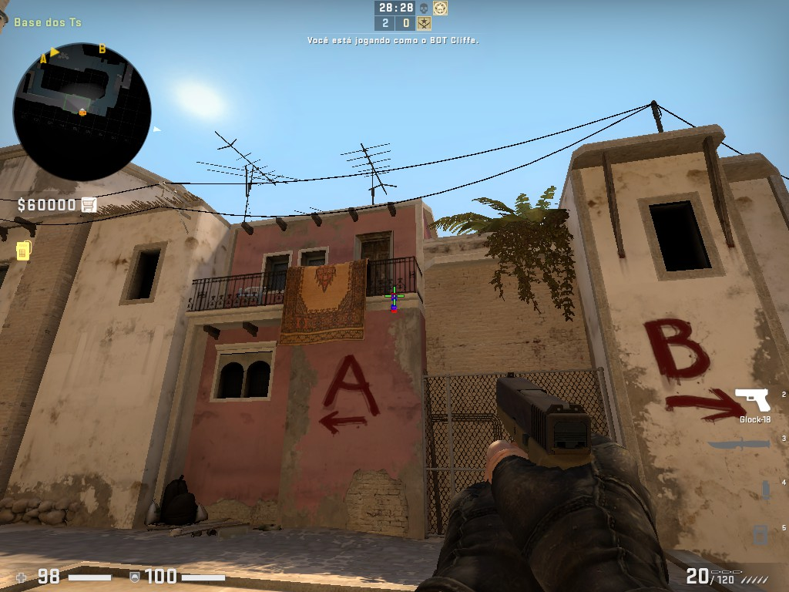
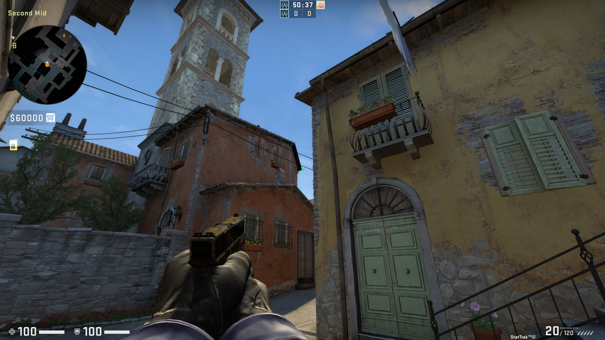

Cache
Liga
Correr nessa faixa, no final dela, jumpthrow mirado em cima da janela
Céu
Posição
Agachar; soltar quando chegar no tijolo ao lado do risco da parede de zinco
CT
Posição
Andar e soltar
Escanteio
Posição

Quando o pino da granada estiver no começo do teto
Tanque
Posição
Meio da lona, correr alguns passos e soltar
Mirage
Cabecinha
Posição
Meio dessa área
CT
Posição
Jumpthrow um pixel a direita do final desta antena
Passagem
Posição
Entre a metade do morro e o ponto preto
Top meio
Posição
Final da antena
Janelão
Posição
Agachado, lado direito do batente, andar e jumpthrow quando terminar o gesso
Forest
Posição
Entre a viga e quina do gesso
Primeiro arco
Posição
Entre antena e teto
Mercado janela
Posição
Agachado, mirar no pico do escanteio, jumpthrow
Janelão roubado CT
Lado inferior esquerdo da mancha preta. Agora pode mirar meio que os TRs não te verão
Inferno
Caixão
Posição
Entre o topo dos dois postes
CT
Posição
Folha da árvore
Xuxa
Posição
Meio desta área
Nip
Posição
Ponta da antena
Areia flashbang
Posição
Agachado, um pouco abaixo do meio da torre, flashbang
Nip e Xuxa flashbang
Posição
Correr e bangar entre as duas janelas
Train
Vagão A
Posição
Alguns pixels a direita do sol
Entre vagões do A
Posição
Linha em cima da torre
Escanteio
Posição
Nesta quina
Fundo CT
Posição
Em cima do forro branco, correr e lançar quando alcançar a faixa amarela
Bombeiro Flashbang
Posição

Arremesso fraco (botao direito)
B baixo Flashbang
Posição
Correr e arremeçar logo em seguida (correr curta distância)
Entre vagões B
Posição
Pouquinhos pixels a direita
Gaules
Posição
Andar de lado até aparecer o pilar, arremessar na altura da metade da porta
Overpass
Caminhão
Posição
Cabeça da lady
Direita bomb a
Posição
Debaixo desse galho
Esquerda bomb a
Posição: atrás da sombra do poste
Em cima da esfera
Cimento
Posição

Nesta linha
Céu
Posição
Meio do triângulo
Ponte
Posição

Meio deste altofalante
Barris molotov
Posição
Correr arremeçar